Мене звати Сухомлін Надія! Я сертифікований майстер з перманентного макіяжу! Маю чи малий досвід в цій сфері діяльності. Я - досвідчений та талановитий майстер перманентного макіяжу з глибоким розумінням технік та матеріалів, що використовуються в цій професії. Мої навички та професійна етика допомагають вам надавати своїм клієнтам високоякісні послуги.

Перманентний макіяж: що про нього треба знати?
Перманентний макіяж - це процедура, під час якої спеціальний інструмент за допомогою тонкого голки вводить пігмент під шкіру. Цей метод дозволяє створити довготривалу косметику на обличчі, яка залишається на місці протягом років. Основні процедури перманентного макіяжу включають омбре-бріви, лінії для очей та губ, а також косметичні татуювання.
ГОЛОВНЕ
ПЕРМАНЕНТНИЙ МАКІЯЖ: ЩО ЦЕ ТАКЕ?
Перманентний макіяж - це, можна сказати, макіяж-татуювання: в ході особливої косметологічної процедури у верхні шари шкіри «закладають» пігмент - на обличчі в результаті утворюється своєрідний макіяж, що не змивається.
Згодом, у міру оновлення шкіри, він потьмяніє, але відбуватися це буде дуже повільно - в деяких випадках ефект зберігається до 5 або 6 років. Це і є великий плюс (економія часу на ранковому макіяжі), і безперечний мінус перманентного макіяжу: невдалий результат міцелярною водою не змити, а вдалий може набриднути, мода на нього - пройти. Тому перед процедурою доведеться ретельно зважити всі за та проти. Усі види перманентного макіяжу різні. Наприклад, тату-стрілки вважаються практичнішим рішенням, ніж перманентні брови. Що ж пропонують косметологи?
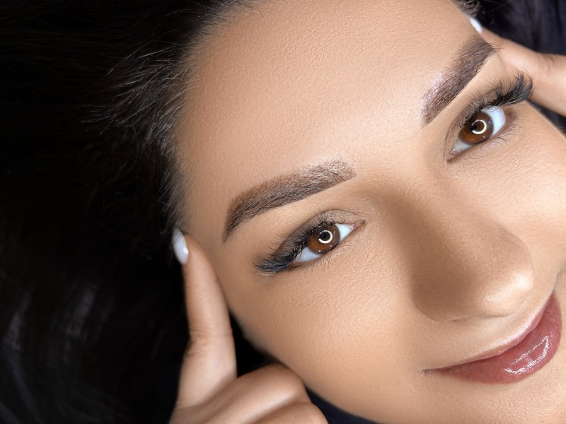ПЕРМАНЕНТНИЙ МАКІЯЖ ЯК КОСМЕТОЛОГІЧНА ПРОЦЕДУРА
Татуаж губ
Нафарбовані губи з чітко окресленим контуром щодня – ось результат, який виходить після якісного татуажу. Але робити його потрібно тому, що він дозволяє вкотре не фарбувати губи помадою. Ця процедура призначена для виділення контуру насичення кольором блідих губ. Словом, татуаж дозволяє виправити природні вади. Як це відбувається? За допомогою апарата з голкою майстер вводить у шкіру барвник на глибину від 0,3 до 0,5 мм. Залежно від потреб можна пропрацювати тільки контур, або заповнити кольором всю поверхню губ. Такий татуаж тримається від 4 до 6 років. Але ризик у будь-якому випадку є: пігмент по-різному проявляється на шкірі, і тому навіть дуже досвідчені майстри не можуть на всі сто вгадати результат.
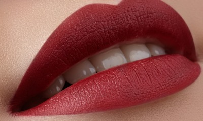Татуаж брів
Підфарбовані брови акуратної, красивої форми 24 години на добу 7 днів на тиждень – ось що в ідеалі має вийти після цієї процедури. Насправді все виходить не зовсім так: апарат, за допомогою якого роблять татуаж, залишає після себе суцільні лінії, які створюють брови, ніби намальовані маркером. Тримається такий результат 2-3 роки. У більшості випадків це виглядає неприродно і навіть вульгарно - особливо тому, що занадто часто майстри підбирають клієнткам темний пігмент для татуажу, що не підходить під їх колір волосся.
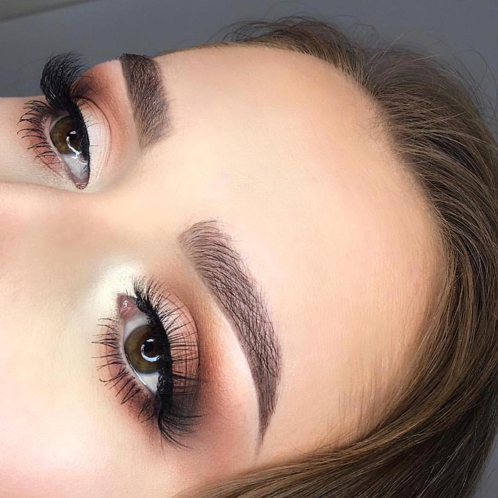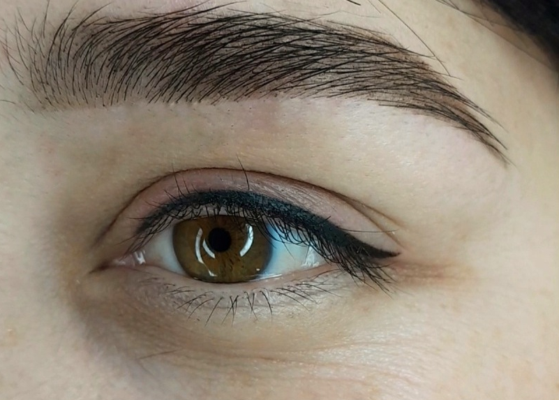
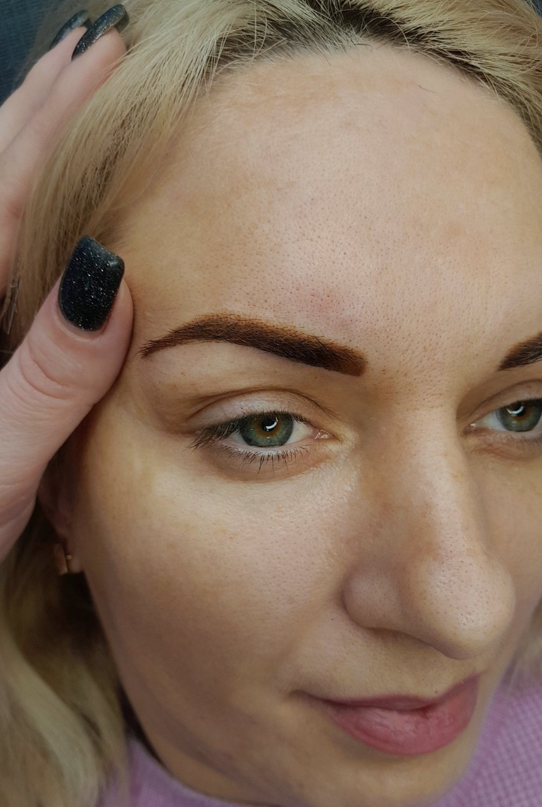
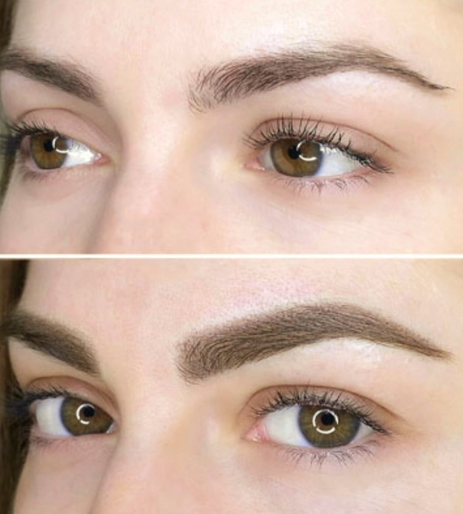
Перманент класичної стрілки
Тату-стрілки здебільшого виходять вдалими. За одну годину (саме стільки триває процедура при роботі з очима) можна отримати або стрілки, підведення контуру, або заповнення простору між віями. Останнє, до речі, забезпечить найприродніший результат: очі здаватимуться трохи підфарбованими, а вії стануть візуально густішими. Якщо вибирати, які малювати стрілки, рекомендуємо дуже тонкі, причому розташовуватися вони повинні максимально близько до лінії зростання вій. Це стане варіантом щодня. А для вечірнього макіяжу перманентну стрілку можна зробити товщою, довшою та яскравішою. До речі, тримаються перманентні стрілки на віці до 10 років.
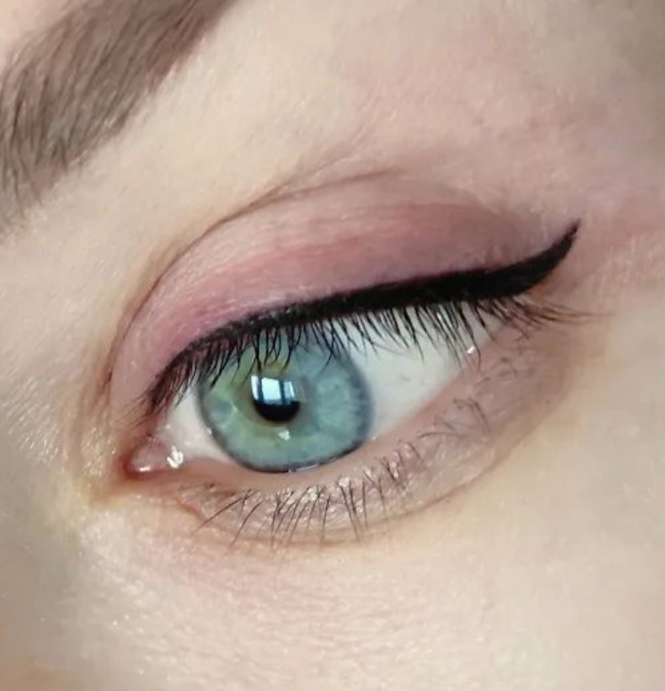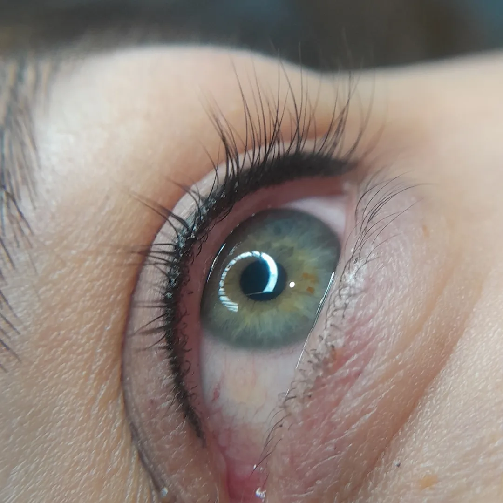
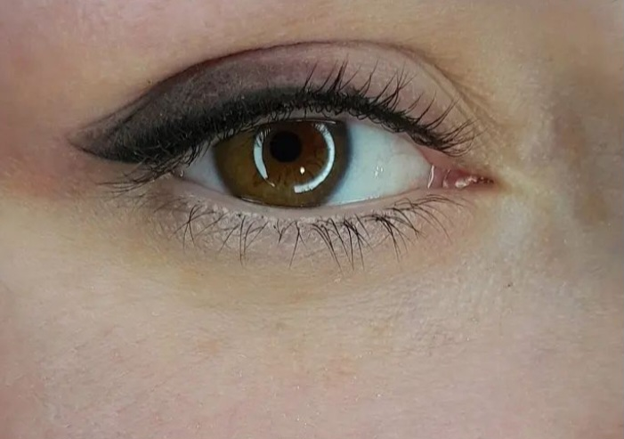
Домашній догляд
Особливий догляд за шкірою в місці татуажу може знадобитися лише спочатку після процедури, тому що мікропігментування все-таки травмує шкіру.
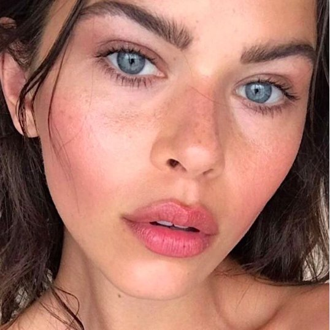Декілька днів після походу до косметолога ви, швидше за все, проведете з набряком та почервонінням. Далі шкіра почне лущитися, і в цей період важливо нічого не робити з скоринкою, що утворюється. Зачекайте, щоб вона зникла сама. Не чухайте шкіру в області татуажу. Намагайтеся взагалі уникати дій, які можуть посилити роздратування. Дайте шкірі відновитися і допоможіть їй загоювальними засобами.
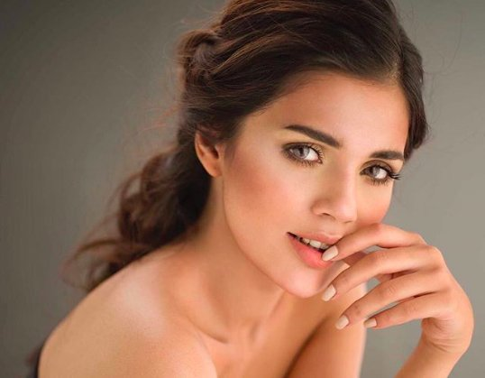Фахівці радять знезаражувати її хлоргексидином та пом'якшувати депантенолом, який заразом відновлює тканини. Обробка буде потрібна кілька разів на день, щоб все робити правильно, дотримуйтесь інструкцій від свого косметолога.
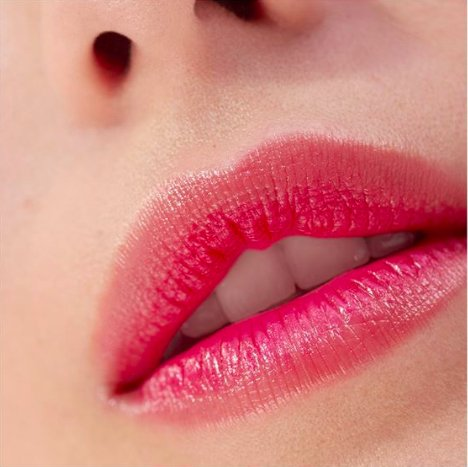Що слід робити до процедури і після процедури, щоб ефект від татуажу брів залишався надовго?
Бажано за тиждень до процедури подбати про шкіру в місці планованого татуажу — застосовувати зволожуючі бальзами або креми.
За 2 дні до візиту до косметолога слід відмовитися від спиртних напоїв та інших речовин, що розріджують кров, в тому числі знеболюючих.
Необхідно обмежити споживання кофеїну і енергетичних напоїв в день процедури.
Не можна приходити голодної на татуаж, тому що організму потрібні енергія і сила. Їжа в цей день повинна бути ситної, але легко засвоюваною.
За день до процедури татуажу потрібно пити багато води. Правильне зволоження поліпшить стан шкіри, забезпечить хороше самопочуття і швидке загоєння.
Відразу після перманентного методу брови можуть виглядати трохи неприродно, але отриманий ефект нормалізується протягом декількох тижнів. Часто перше враження від сильно виражених брів може бути неправильним. Якщо ви помітили занадто темні брови після процедури, спокійно чекайте остаточного результату.
Зазвичай загоєння перманентного макіяжу брів триває близько 2 тижнів, після чого струпи і почервоніння повинні зникнути за умови правильного догляду — змазування кремом Бепантен з вітаміном Е, який прискорює регенерацію шкіри.
Після перманентного макіяжу брів оберігайте обличчя від впливу сонця і користуйтеся кремами з ультрафіолетовим фільтром.
Пам’ятайте, що на 2 тижні після процедур доведеться відмовитися від басейну, сауни і
косметичних процедур для особи.
Дотримуючись цих рекомендацій, ви отримаєте чіткі і красиві брови, які будуть радувати
вас протягом багатьох років. Це
підтверджують відгуки моїх постійних клієнток. Записуйтеся на процедуру перманентного
макіяжу брів прямо зараз!